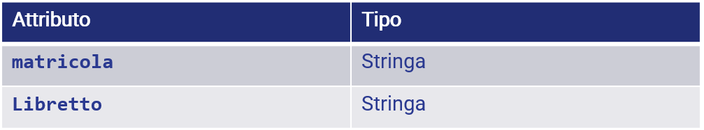
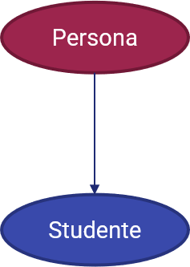
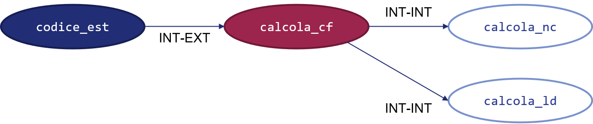
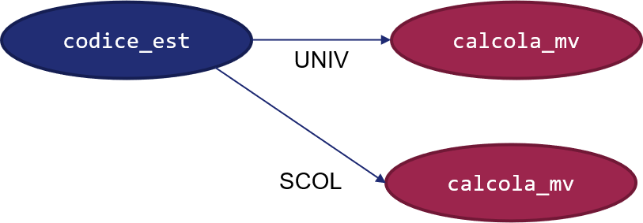

Appendice D - Principi di Programmazione Orientata agli Oggetti¶
La programmazione orientata agli oggetti (in inglese object-oriented programming, OOP) è un paradigma di programmazione che sposta il focus dalle funzioni ai dati. In particolare, la OOP prevede che tutto sia un oggetto: una qualsiasi variabile è interpretata come un oggetto, così come anche le funzioni stesse (in alcuni linguaggi).
Ciò si estende ovviamente anche ai tipi definiti dall'utente, che assumono il nome di classi. Facciamo un esempio.
La classe Persona¶
Immaginiamo di voler definire una struttura dati che contenga al suo interno le informazioni necessarie a definire una persona, come nome, cognome, genere ed età. Per farlo, ovviamente, dovremo "unire" tra di loro diversi dati primitivi: potremo usare una stringa per il nome, una per il cognome, una per il genere e, infine, un intero per l'età.
In tal senso, possiamo creare quindi la classe Persona, che avrà quattro attributi, come mostrato in figura.

Sottolineamo come una classe rappresenti tutte le possibili persone: infatti, si cerca di creare delle strutture dati generiche, che abbiano degli attributi comuni a tutte le possibili istanze. Nel nostro caso, sappiamo che ogni persona ha un nome, un cognome, un genere ed un'età, quindi usiamo questi quattro valori come attributi di classe.
Differenza tra classe ed istanza
Abbiamo detto che una classe rappresenta tutte le possibili istanze della stessa. Ciò si traduce, nel nostro esempio, nel fatto che la classe Persona è in grado di rappresentare tutte le persone, e un'istanza della classe Persona è una singola variabile, o oggetto, che rappresenta una certa persona. Per capirci: un'istanza di Persona è "Angelo, Cardellicchio, Uomo, 37", mentre un'altra istanza è data da "Frank, Hood, Uomo, 42", un'altra ancora da "Camilla, Lilla, Donna, 55", e così via.
Ovviamente, potremo in qualche modo agire con degli opportuni metodi su questi attributi. Ad esempio, se avessimo a disposizione anche il luogo e la data di nascita, potremmo creare un metodo calcola_cf che, per l'appunto, permette di generare il codice fiscale di una singola istanza.
Oltre al concetto di classe, tuttavia, la OOP definisce altri tre concetti base. Vediamoli di seguito.
Concetto 1: Ereditarietà¶
Per ereditarietà si intende la capacità di una classe di "discendere" da un'altra. Non dobbiamo, però, pensare al nostro albero genealogico: infatti, noi abbiamo parte delle caratteristiche di ciascuno dei nostri genitori, mentre una classe figlia eredita in toto le caratteristiche di una classe madre.
Ad esempio, potremmo definire la classe Studente come figlia della classe Persona, cui aggiungerà i seguenti attributi:

Possiamo visualizzare questa relazione in ordine gerarchico come segue:

Da notare che la classe Studente può aggiungere anche dei metodi, oltre che degli attributi a quelli offerti da Persona, come ad esempio genera_media_voto.
In ultimo, notiamo come ogni istanza di Studente è un'istanza di Persona, ma non è vero il contrario, e quindi non tutte le persone sono degli studenti. Per aiutarci a comprendere questo concetto, possiamo visualizzare gli insiemi delle istanze di Persona e di Studente:

Generalizzazione e specializzazione
La relazione di ereditarietà può anche essere vista in termini di generalizzazione e specializzazione. In questo contesto, la classe Studente è una specializzazione di Persona, in quanto sottende ad un insieme più specifico; al contrario, le persone sono viste come una generalizzazione degli studenti.
Ereditarietà multipla e multilivello
Alcuni linguaggi, compreso Python, offrono la possibilità di ereditare da più classi; tale concetto è chiamato ereditarietà multipla. Se invece stabiliamo una vera e propria gerarchia di classi, con una classe "nonna", una "madre" ed una "figlia", avremo una struttura multilivello.
Concetto 2: Incapsulamento¶
Il concetto di incapsulamento prevede che sia possibile accedere ad un metodo (o anche ad un attributo) di una classe esclusivamente mediante la sua interfaccia verso il mondo esterno. Vediamo cosa significa.
Immaginiamo di voler calcolare il codice fiscale di una persona: dovremo seguire una procedura ben precisa e moderatamente complessa, che potremo tranquillamente "nascondere" al codice che usa la classe Persona, il quale dovrà semplicemente invocare il metodo calcola_cf. Tuttavia, se volessimo seguire il principio di modularità, che ci suggerisce di "suddividere" funzioni complesse in maniera tale da renderle più semplici, dovremmo creare altre funzioni ausiliarie, che potrebbero calcolare la rappresentazione di nome e cognome (calcola_nc) e i dati alfanumerici derivanti da luogo e data di nascita (calcola_ld). Ovviamente, non vi è il bisogno di accedere dall'esterno della classe a questi metodi, in quanto hanno valenza esclusiva nell'ambito del calcolo del codice fiscale: per questo motivo, li si potrà dichiarare come privati, e potranno essere acceduti soltanto dall'interno della classe.
In questo modo, la classe mantiene un'interfaccia stabile ed essenziale verso l'esterno: il codice che usa la classe avrà sempre un punto di accesso ben definito e, nel caso si debbano modificare dei comportamenti interni alla classe, non sarà influenzato da dette modifiche. Ad esempio, infatti, se per qualche motivo si decidesse di cambiare l'ordine con cui si mostrano nel codice fiscale la rappresentazione del cognome e del nome, basterebbe modificare il metodo calcola_nome_cognome_codice_fiscale, ed il resto dell'implementazione (sia della classe, sia del codice chiamante) non ne sarebbe influenzata.

Concetto 3: Polimorfismo¶
Il concetto di polimorfismo prevede che sia possibile modificare il comportamento associato ad un metodo a seconda della classe che lo utilizza.
Immaginiamo ad esempio di specializzare la classe Studente in due ulteriori rappresentazioni, ovvero StudenteUniversitario e StudenteScolastico. Ovviamente, il metodo genera_media_voto sarà ereditato da entrambe le classi; tuttavia, l'implementazione dovrà essere necessariamente differente, in quanto la media di laurea è pesata in modo diverso rispetto alla classica media aritmetica usata nelle scuole fino alla secondaria.
Il polimorfismo ci permette di raggiungere questo obiettivo: potremo effettuare una procedura di override del metodo genera_media_voto che, pur conservando la stessa firma, avrà differenti implementazioni nelle classi StudenteUniversitario e StudenteScolastico. Ovviamente, il fatto che il metodo conservi la stessa firma rappresenta un vantaggio paragonabile a quello ottenuto mediante il polimorfismo: infatti, un programmatore potrà usare il metodo genera_media_voto alla stessa maniera per uno studente universitario ed uno di scuola media secondaria, senza per questo dover tenere a mente due diverse interfacce.
